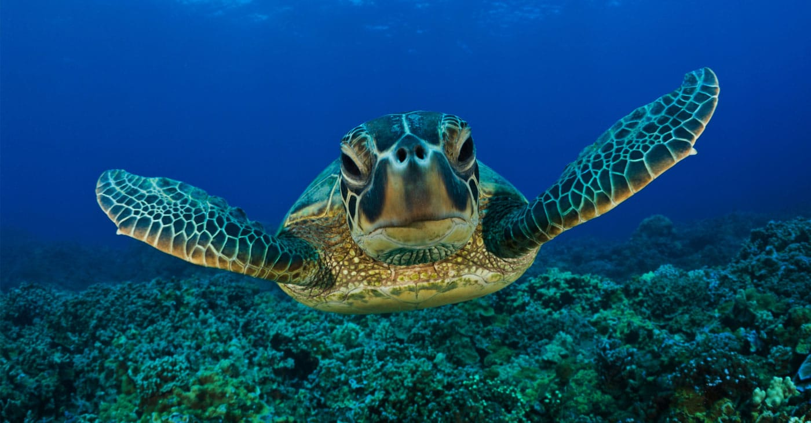
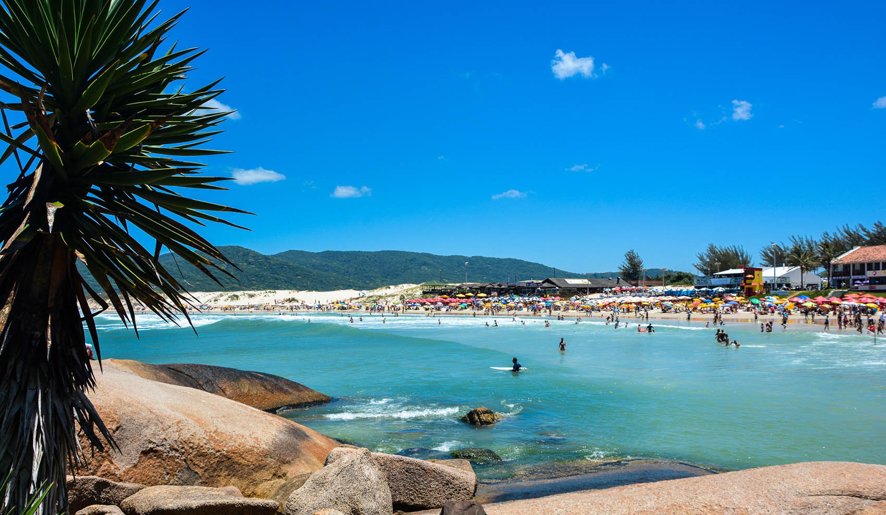
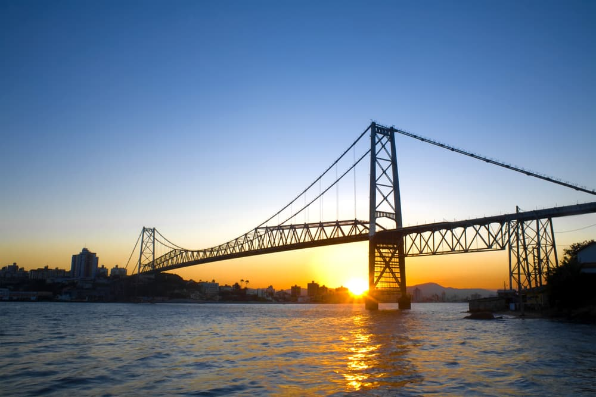

Pontos Turísticos

Projeto TAMAR
O Projeto TAMAR é um projeto conservacionista brasileiro, que revolucionou a luta pela preservação de espécies ameaçadas de extinção. Atua na busca pela preservação das tartarugas-marinhas ameaçadas de extinção.

Praia da Joaquina
Praia de água tranquila e cristalina, com muitas dunas por perto, faixa de areia extensa a vista é maravilhosa.

Ponte Hercílio Luz
Não dá pra falar de XXXXXXXXXXX e não citar a ponte Hercílio Luz. Ela é maior símbolo de XXXXXXXXXXX desde sua construção, em maio de 1926. Foi tombada como patrimônio histórico, artístico e arquitetônico do município de XXXXXXXXXXX em agosto de 1992.